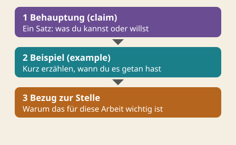

Das Vorstellungsgespräch
Mit einem KI-Tutor lernen
Ein KI-Tutor erklärt dir diese Seite und hilft dir bei den Aufgaben. Wähl deinen Assistenten:
Mit Claude öffnen Mit ChatGPT öffnen Mit Mistral Vibe öffnen
Du nutzt dein eigenes Konto beim Anbieter. Der Assistent ist kein Angebot von lernapps.net: lernapps liefert nur Inhalte und Aufgaben. Die Wahl gilt für alle Seiten, nur auf diesem Gerät.
Worum es geht
Vielleicht hast du schon eine Bewerbung geschrieben. Mr Anderson lädt Sophie zum Vorstellungsgespräch (job interview) in die Bücherei ein. Danach kannst du dich auf ein Vorstellungsgespräch vorbereiten und typische Fragen beantworten.
Aufgabe
Lösung
Ich lerne den Text meines Lebenslaufs auswendig, damit ich ihn aufsagen kann
Der Arbeitgeber kennt deinen Lebenslauf schon. Im Gespräch will er mehr von dir hören als die Liste.
Ich überlege vorher, wie ich auf typische Fragen antworte richtige Antwort
Typische Fragen kommen fast immer. Wer vorher überlegt, antwortet ruhiger und genauer.
Ich warte ab, was gefragt wird, und antworte dann so kurz wie möglich
Sehr kurze Antworten sagen nichts über dich. Der Arbeitgeber möchte dich kennenlernen.
Eine gute Vorbereitung heißt, typische Fragen vorher zu durchdenken und Antworten zu üben.
Lesestück · Sophie und Mr Anderson
Lies das Gespräch in drei Abschnitten. Die Zahlen vor den Zeilen brauchst du bei den Aufgaben. Schwere Wörter stehen hier.
| Englisch | Deutsch |
|---|---|
| strength | die Stärke |
| to improve | verbessern |
| deadline | der Abgabetermin |
| proud | stolz |
| reliable | zuverlässig |
| librarian | der Bibliothekar, die Bibliothekarin |
| shelves | die Regale |
| patient | geduldig |
- Mr Anderson: Good morning, Sophie. Please sit down, and thank you for coming.
- Sophie: Good morning, Mr Anderson. Thank you for seeing me.
- Mr Anderson: Let us start with an easy question. Can you tell me about yourself?
- Sophie: Of course. I come from Germany, and I am spending a school year at Millbrook School. I write for the school newspaper and I help in the school library. In my free time I enjoy reading and swimming.
- Mr Anderson: Thank you. And why do you want this job?
- Sophie: I love books, and I would like to help visitors to find books they enjoy. I also want to improve my English, and a library is a good place for that.
Aufgabe
Lösung
Sie sagt nur „Yes“
In Zeile 4 antwortet Sophie in mehreren Sätzen.
Sie liest ihren Lebenslauf Zeile für Zeile vor
Sophie zählt nicht alles auf. Sie wählt aus: Schule, Erfahrung, Hobbys.
Sie nennt ihre Schule, ihre Erfahrung und ihre Hobbys richtige Antwort
Das steht in Zeile 4: Millbrook School, Zeitung und Bibliothek, Lesen und Schwimmen.
Auf diese Frage gibst du einen kurzen Überblick, keine lange Liste.
- Mr Anderson: Can you tell me about a time when you helped someone?
- Sophie: Yes. Last month a teacher needed books for a lesson about the history of Millbrook. I asked what the lesson was about, and then I found five books for her. She was very pleased, and I felt proud.
- Mr Anderson: What are your strengths?
- Sophie: I think I am reliable. For example, I have never missed a deadline at the school newspaper, and I always arrive on time. This is important in a library, because visitors need help at the right moment.
Aufgabe
Lösung
Zeile 8 richtige Antwort
In Zeile 8 sucht Sophie Bücher für eine Lehrerin.
Zeile 10
Zeile 10 nennt ein Beispiel für Zuverlässigkeit, den Abgabetermin der Zeitung. Von Hilfe für eine Person steht dort nichts.
Zeile 6
Zeile 6 nennt den Grund, warum Sophie die Stelle will. Eine Geschichte erzählt sie dort nicht.
Auf „a time when“ antwortest du mit einer kleinen Geschichte, die schon vorbei ist.
- Mr Anderson: The job is four hours a day, three days a week. Is that all right for you?
- Sophie: Yes, that is perfect. I have no other plans for the summer holidays, and I would like to work with the reading groups.
- Mr Anderson: Good. Do you have any questions for us?
- Sophie: Yes, I do. What would a typical day in the library look like, and who would I work with?
- Mr Anderson: You would start by putting books back on the shelves, and you would work with our team of librarians. Thank you, Sophie. We will send you an email next week.
- Sophie: Thank you very much for your time. Goodbye, Mr Anderson.
Aufgabe
Lösung
Zeile 14 zeigt, dass sie am Ende selbst Fragen stellt richtige Antwort
Richtig: Mit eigenen Fragen zeigt sie Interesse an der Arbeit.
Zeile 16 zeigt, dass sie sich am Ende für die Zeit bedankt richtige Antwort
Richtig: Ein höflicher Schluss gehört zum Gespräch.
Zeile 12 zeigt, dass sie lieber nur zwei Tage arbeiten möchte
In Zeile 12 sagt Sophie, dass die Arbeitszeit für sie passt.
Sophie fragt selbst nach (Zeile 14) und bedankt sich (Zeile 16).
Offene Aufgabe
Welche Antwort von Sophie findest du am besten, und warum? Schreibe zwei bis drei Sätze auf Englisch.
Eine gute Antwort enthält:
- Du nennst eine Antwort oder eine Zeile aus dem Gespräch. Nachlesen
- Du gibst einen Grund mit because. (Form)
- Du schreibst in ganzen Sätzen. (Form)
Lösung
I like the answer in line 8 best because Sophie tells a real story. Then Mr Anderson can see how she works with visitors. Die App bewertet deinen Text nicht. Vergleiche ihn mit den Punkten.
Der Bauplan einer Antwort

© CC-BY-4.0Der Bauplan einer Antwort von oben nach unten gelesen: so hat Sophie in Zeile 10 geantwortet.
Im Vorstellungsgespräch findet der Arbeitgeber heraus, ob du für die Stelle passt. Die Fragen drehen sich um Erfahrung, Ausbildung und Fähigkeiten. Eine gute Antwort hat drei Schritte: eine Aussage (claim), ein Beispiel (example) und den Bezug zur Stelle. Auch wie du sprichst, zählt: klar, mit kleinen Pausen und freundlich. Kurzformen wie I'm sind im Gespräch normal. Slang wie gonna klingt zu locker. Am Ende stellst du eine eigene Rückfrage. Am besten übst du mit einem Probegespräch und bittest danach um Rückmeldung.
Merke
Aussage, Beispiel, Bezug: So wird aus einem Wort eine Antwort. Am Ende fragst du selbst etwas.
Übung
Aufgabe
Lösung
Richtige Antwort: Why do you want this job? – Because I enjoy sport and I like helping visitors; Tell me about a time when you worked in a team. – Last year my class made a poster together; What are your strengths? – I am patient, and I stay calm when it is busy; Do you have any questions for us? – Yes, will I have a break during the day
Jede Antwort sagt mehr als ein Wort und passt zur Frage. Das einzelne „Yes“ passt zu keiner dieser Fragen, weil es nichts über dich sagt.
Aufgabe
Lösung
Yes, I am the best team player you will ever meet, and I never have problems with other people
Das ist nur eine Aussage. Es fehlt ein Beispiel, das sie zeigt.
Yes, I do. Last year I helped to plan a sports day, and teamwork is important in a busy library richtige Antwort
Aussage, Beispiel und Bezug zur Stelle: alle drei Schritte sind da.
Yeah, sure, I get on with everybody in my class, no problem at all
Yeah und no problem klingen zu locker, und ein Beispiel fehlt.
Yes
Eine Ein-Wort-Antwort sagt nichts über dich. Der Arbeitgeber möchte ein Beispiel hören.
Eine gute Antwort hat drei Schritte und klingt freundlich, ohne Slang.
Aufgabe
Schreibe den Satz für eine Antwort. Die Vorgabe ist auf Englisch und zeigt, was du brauchst.
Tipp
Das Beispiel ist schon vorbei: Nimm die Vergangenheit.
- For example, I once (plan) a book sale.
- important · this job · because · visitors · need · help
- a question for the end: time · work · start · morning
Lösung
- For example, I once planned a book sale.
- This is important for this job because visitors need help. (auch richtig: This is important in this job because visitors need help.; That is important for this job because visitors need help.; That is important in this job because visitors need help.)
- What time does the work start in the morning? (auch richtig: What time does work start in the morning?; When does the work start in the morning?; When does work start in the morning?)
Das Beispiel steht in der Vergangenheit, der Bezug zur Stelle erklärt, warum es wichtig ist, und am Ende stellst du eine Frage mit does.
Aufgabe
Höre den Satz und schreibe ihn auf.
- KI
- KI
- KI
Lösung
- Speak slowly and clearly.
- Prepare an example for each answer.
- Finish by asking a friendly question.
Die Sätze geben Tipps für ein Vorstellungsgespräch.
Selbst sprechen und schreiben
Aufgabe
Spiele das Gespräch. Mr Anderson fragt: „Can you tell me about a time when you were patient?“ Höre die drei Sätze einer Antwort (Aussage, Beispiel, Bezug) und sprich sie nach.
- I think I am a patient person.KI
- For example, I once helped a nervous visitor.KI
- That is useful when visitors ask many questions.KI
Zum Aufnehmen braucht diese Aufgabe JavaScript. Die Beispiele kannst du auch ohne anhören.
Lösung
- I think I am a patient person.
- For example, I once helped a nervous visitor.
- That is useful when visitors ask many questions.
Offene Aufgabe
Du bewirbst dich um einen Ferienjob als Helfer im Riverside Sports Centre (erfunden). Schreibe auf Englisch deine Antworten auf drei Fragen: „Tell me about yourself.“, „Why do you want this job?“ und „Tell me about a time when you worked in a team.“ Schreibe zu jeder Frage zwei bis drei Sätze und zum Schluss eine eigene Rückfrage. Nimm keine echten Daten.
Eine gute Antwort enthält:
- Jede Antwort hat eine Aussage, ein Beispiel und einen Bezug zur Stelle. Nachlesen
- Bei „Tell me about yourself“ nennst du Schule, Erfahrung und Hobbys. Nachlesen
- Das Beispiel bei „a time when“ steht in der Vergangenheit. (Form)
- Du schreibst ganze Sätze ohne Slang, nicht nur ein Wort. (Form)
- Du endest mit einer eigenen Rückfrage. Nachlesen
Lösung
Tell me about yourself: I am a student and I like sport. At school I help to put out the equipment before lessons, and in my free time I play football and swim.
Why do you want this job: I enjoy sport, and I would like to help visitors to enjoy it too. A sports centre is a good place to learn how to work with different people.
Tell me about a time when you worked in a team: Last year my class made a poster for the school sports day. I drew the pictures, and my friends wrote the text. This helps me in a busy centre, because everybody has to share the work.
My question: Who would I work with on my first day?
Die App bewertet deinen Text nicht. Vergleiche ihn mit den Punkten.
Rückblick auf das Kapitel
Du hast das Kapitel geschafft. Der Bauplan gab dir bei jedem Text die Teile vor: Anrede, Anliegen und Gruß in der formellen E-Mail, Personal details bis Interests im CV, sechs Teile in der Bewerbung und drei Schritte in der Antwort. Den Ton-Regler hast du bei der formellen E-Mail ganz rechts bei formal gesehen. Derselbe Gedanke gilt weiter: höflich in der Bewerbung, knapp in den Stichpunkten des CV, im Gespräch freundlich und ohne Slang. Mit beidem kannst du dich auch um ein Praktikum bewerben.
Fehler gefunden oder eine Idee für diese App?